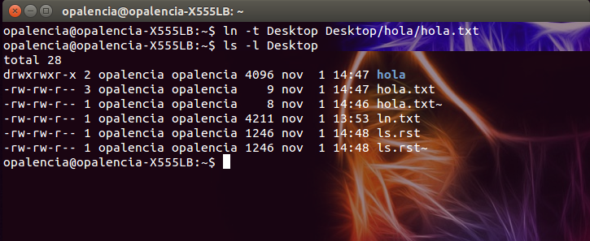

Crear enlaces entre archivos > ln¶
Nombre del comando: ln
Man page online: https://linux.die.net/man/1/ln
Descripción: Crear enlaces o hipervínculos entre archivos. Importante: no acepta varios parámetros a la vez cuando se usa el parámetro «-t».
Man page local: $ man ln o $ man ln > ln.txt
Instalado por defecto: Sí, al menos en Debian.
Algunas Opciones:
-s, --symbolic Realizar enlaces simbólicos en lugar de enlaces duros.
-t, --target-directory=DIRECTORY Especifica el DIRECTORIO en el cual crear los enlaces.
-v, --verbose Imprimir el nombre de cada archivo vinculado.
Ejemplo 1: $ ln -t Desktop Desktop/hola/hola.txt, en este ejemplo se creará un enlace al archivo hola.txt con el mismo nombre y dicho enlace se guardará en la ruta /home/currentuser/Desktop.
Ejemplo 2: $ ln -vs hola/hola.txt holaLink, en este ejemplo se creará un enlace simbólico al archivo hola.txt con el nombre de holaLink.